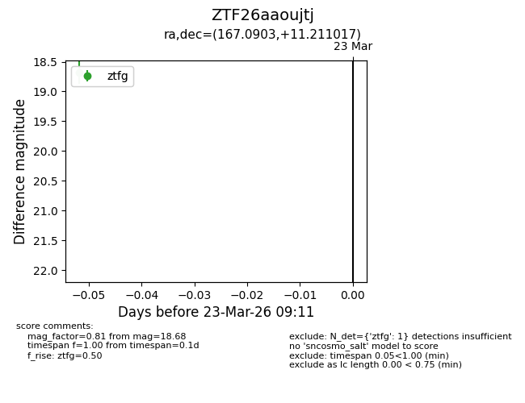
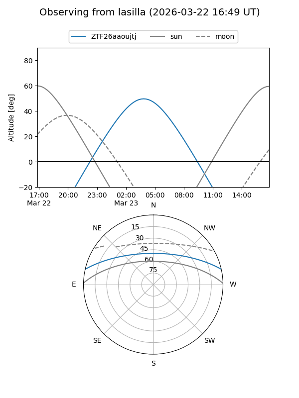
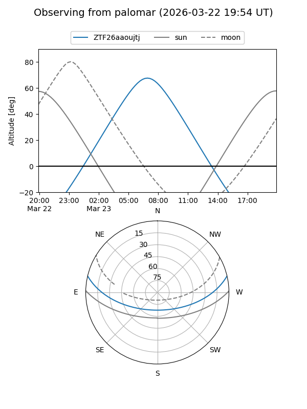

ZTF26aaoujtj
Target ZTF26aaoujtj at 2026-03-23 09:13
Aliases and brokers:
FINK: link
Lasair: link
ALeRCE: link
alt names
ZTF26aaoujtj (ztf,fink_ztf)
Coordinates:
equatorial (ra, dec) = 167.0903,+11.21102
equatorial (HMS+DMS) = 11:08:21.66,+11:12:39.66
galactic (l, b) = (241.2472,+61.02612)
Flags:
Photometry:
last ztfg=18.68
1 ztfg detections
Lightcurve

Visibility


Additional plots